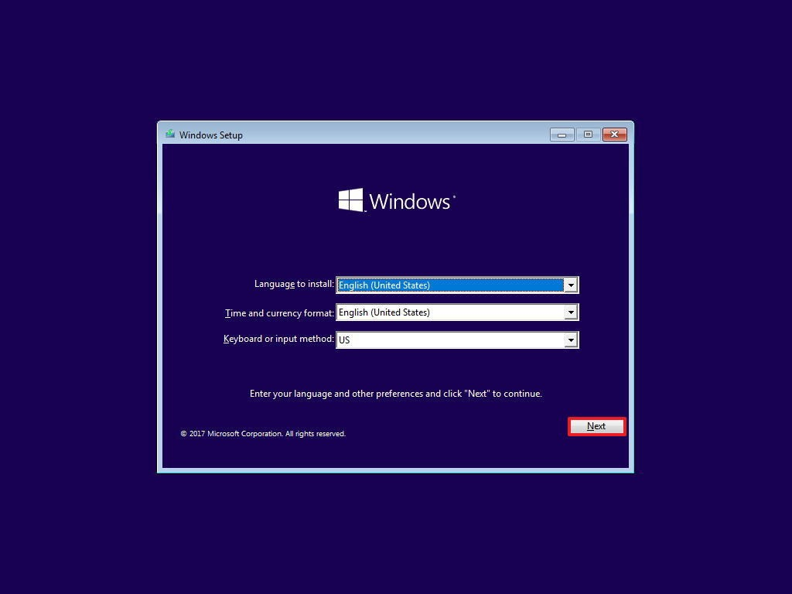
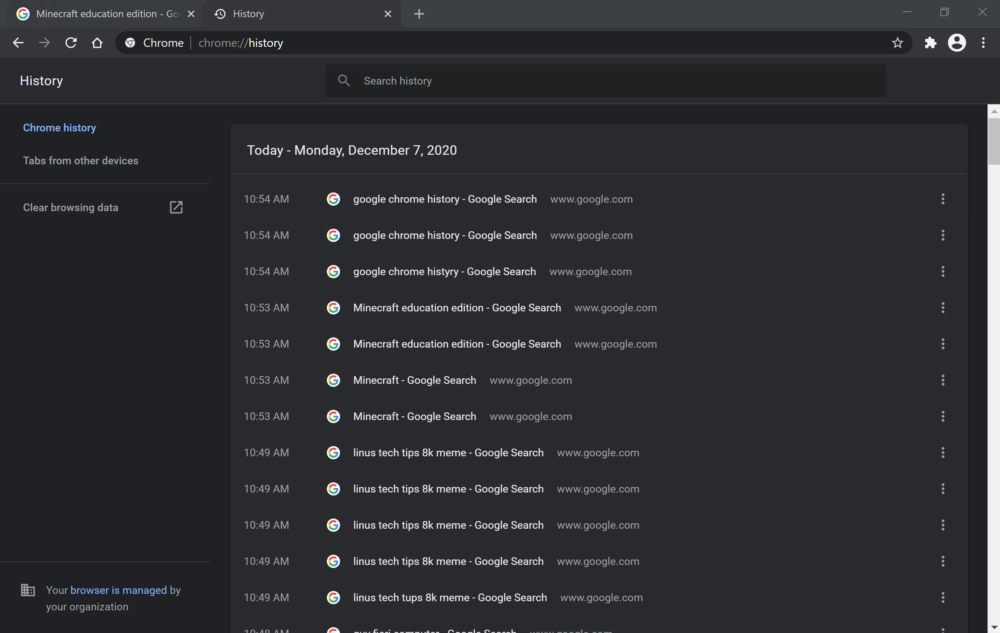

About us
Our team of profesinals works around the clock to bring you exploits made for computers with organization restrictions. we promise that you will be satisfied with our detailed instructions on how to perform exploits.
Our team of profesinals works around the clock to bring you exploits made for computers with organization restrictions. we promise that you will be satisfied with our detailed instructions on how to perform exploits.

1.Find a USB with at least 32gb of storage on it
2.Completely wipe the USB
3. plug the USB into your home computer and proceed to https://www.microsoft.com/en-au/software-download/windows10 and select create media tool
4. intall the file onto your usb and follow the setup steps to create a windows media tool
5. remove the USB from your home computer
6. shutdown your surface pro
7. plug in your usb then power on the surface pro while holding the volume up button and on button until it takes you to the bios settings
8. in the bios settings procede to the area named "boot configuration" then drag the usb to the top of the list
9. save and exit the bios settings.
10. your computer will now boot into a windows setup screen
11. follow the windows setup steps to complete your full reset.

1. open a fresh word document and type in "open"
2. select the word "open"
3. press "create link"
4. under the link notification adress write C:\Users\firstname.lastname\AppData
5. press "ok"
6.hold control and press the word named "open"this will take you to file explorer and show 3 folders named Local,Locallow and roaming.
7. Open the "local" folder
8. continue to "google">"chrome">"User Data">"default"
9. once the folder named "default is opened scroll down and select the file named "history" 10. Press Delete.

1. Find USB with at least 4gb of free space on it
2. Plug in the USB
3. Proceed to the Opera download page (click here)
4. Select the download called "Windows 64 Bit"
5. Install the file onto your USB
6. open file explorer and select your USB then open the opera installer file
7. follow the setup steps

1. Open your preferred search engine on your surface pro and search up minecraft edu download (Press here to go to the download page)
2. Below the "download now" button there is a hyperlink named "Download windows store edition"
3. press on the install link
4. A box will pop up saying "open app installer?". "Press Open app installer"
5. Press "install"
6. open the app when it is finished installing
7. when it asks you to sign in, provide your school email and the password you use to unlock your computer.
8. build cool stuff